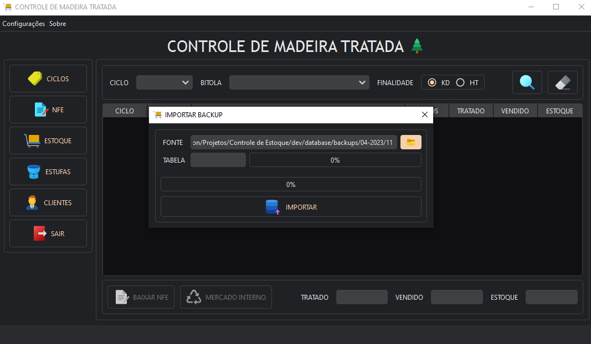

Controle de Madeira Tratada
Configurações iniciais
Ao iniciar o aplicativo pela primeira vez será necessário configurar uma base de dados. O banco de dados usado é uma arquivo SQLite, basta interagir com a janela para prosseguir.
Você pode selecionar a localização de um banco já existente ou criar um novo. Caso venha a cancelar a interação antes de configurar o banco você pode abrir a janela novamente clicando em "Configurações/Banco de Dados/Configurar" no menu superior.
É possível alterar a qualquer momento as configurações de frequência e quantidade máxima de backups. Veja mais sobre o sistema de backup clicando aqui.
É ACONSELHÁVEL CRIAR O BANCO DE DADOS EM UM LUGAR SEPARADO DA INSTALAÇÃO DO APLICATIVO, DESSA FORMA EVITÁRA PERCA DOS DADOS CASO VENHA INSTALAR UMA VERSÃO MAIS ATUALIZADA DO PROGRAMA.
Constante Skids
É estatisticamente impossível calcular com exatidão o volume dos pezinhos gastos por carga. Portanto é usado um algoritmo artificial para simular esse cálculo.
O programa utiliza o seguinte algoritmo para calcular o valor e debitar do estoque de pezinhos para cada registro de Nfe:
Caso o ciclo em questão tenha apenas uma bitola: A quantidade de fardos é multiplicada pela constante de skids curto + a quantidade de fardos multiplicada pela constante de skids longo.
Caso o ciclo tenha duas ou mais bitolas: a bitola com maior volume é usada como skid curto e as demais bitolas são usadas como skids longos, ambas são multiplicadas pela quantidade de fardos.
Essas constantes já vem configuradas com um valor padrão mas é possível alterar-las acessando "Configurações/Pezinhos (HT)" e setando os valores desejados.
Temas
O aplicativo possui suporte tanto para dark theme quanto para light theme, basta acessar "Configurações/Tema" e selecionar o seu preferido.
Backup
O backup é feito automaticamente de acordo com a frequência configurada.
No diretório do banco de dados é criado uma pasta chamada de "backups" juntamente com um arquivo "config.json" dentro dela. Todos os dados são exportados em arquivos CSV e organizados na seguinte estrutura:
Sendo "04-2023" referente a mês 4 de 2023 e "11" sendo o dia do backup em questão.
Quando a quantidade de backups for superior a quantidade máxima configurada pelo usuário o backup mais antigo é removido automaticamente
ACONSELHÁVEL NÃO MODIFICAR NENHUM DOS ARQUIVOS GERADOS PELO SISTEMA DE BACKUP!
Importar Backup
A partir dos backups gerados pelo sistema de backup é possível importa-los novamente para dentro do programa.
Basta acessar "Configurações/Banco de Dados/Importar Backup" no menu superior e informar o diretório da fonte (O último diretório antes dos arquivos CSV).
Uma vez inciado o sistema irá para cada uma das tabelas deletar todos os dados atuais e substituir pelos dados armazenados nos arquivos de backup. Portanto prossiga apenas se tiver certeza do que está fazendo.
IMPORTE APENAS ARQUIVOS GERADOS PELO PRÓPRIO SISTEMA DE BACKUP! O APLICATIVO UTILIZA TABELAS RELACIONADAS PARA ARMAZENAR OS DADOS PORTANTO SE HOUVER ALGUM ERRO DURANTE A IMPORTAÇÃO DO BACKUP TODO O PROGRAMA PODE FICAR COMPROMETIDO ATÉ QUE UM BACKUP VÁLIDO SEJA IMPORTADO.
Atalhos
Menu
- Menu Ciclos - Ctrl + 1
- Menu Nfe - Ctrl + 2
- Menu Estoque - Ctrl + 3
- Menu Estufas - Ctrl + 4
- Menu Clientes - Ctrl + 5
- Menu Sair - Ctrl + 6
Página Ciclos
- Novo Ciclo - Ctrl + N
- Salvar Ciclo - Ctrl + S
- Deletar Ciclo - Ctrl + D
- Adicionar Bitola- Ctrl + A
- Remover Bitola - Ctrl + R
- Pesquisar - Ctrl + P
- Limpar - Ctrl + L
- Editar - Ctrl + E
Ciclos
Histórico
Página Nfe
- Nova Nfe - Ctrl + N
- Salvar Nfe - Ctrl + S
- Deletar Nfe - Ctrl + D
- Adicionar Bitola- Ctrl + A
- Remover Bitola - Ctrl + R
- Pesquisar - Ctrl + P
- Limpar - Ctrl + L
- Editar - Ctrl + E
Nfe
Histórico
Página Estoque
- Baixar Nfe - Ctrl + B
- Baixar Mercado Interno (Resíduo) - Ctrl + M
- Pesquisar - Ctrl + P
- Limpar - Ctrl + L